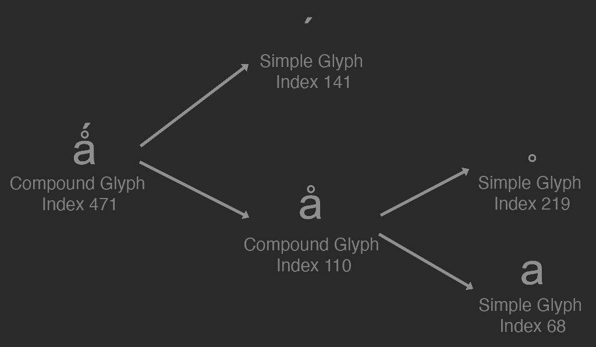

Glyphs
A glyph describes the visual shape that make up a symbol. The outline of a glyph is made up of one or more contours. A contour is a closed loop of lines and curves. Glyphs are filled with the Non Zero Winding Rule. The direction, or winding of the contour determines if an area is filled in or not.

There are two types of glyphs, a simple and a compound glyph. Simple glyphs are what we've been discussing, a simple glyph is made up of one or more contours. A compound glyph is the combination of two or more simple glyphs. Compound glyphs can recursivley include other compound glyphs.
To parse glyph outlines out of a true type font file, we will first load the font directory. Once the font directory is loaded, we need to find the following tables:
| Table | Why it's needed |
|---|---|
| maxp | Contains the number of glyphs contained in the font. |
| loca | Glyph data is not stored in a tightly packed array. loca contains offsets to glyphs from the start of the glyf table. |
| head | Contains indexToLocFormat, which tells us if the loca table is short (16 bit) or long (32 bit). |
| glyf | This table holds glyph contours. |
Loading the glyph outline is a multi step process. First, we need to load the maxp table and find the total number of glyphs. Then we need the head table, to check what type the loc table is (16 bit or 32 bit). Once we know the type of the loca table, we can loop trough every glyph offset (0 ... maxp.numGlyphs), and use that offset to finally locate the glyph data.
The glyph data is stored with some compression, reading glyphs is verbose (code-wise). To make the code a bit easier to follow along, we will first uncompress the glyph data into an array that matches the source data closeley, before converting that array into the glyph structure.
Glyph Structure
A glyph is made up of edges grouped into contours. Each edge is either a straight line, or a quadratic bezier curve. To represent this, we're going to make an Edge structure that has a start point, an end point and an optional control point. The Edge structure also contains a quadratic flag to let us know if the edge is a curve or a straight line.
struct Edge {
union {
struct {
Point start;
Point end;
Point control;
};
Point points[3];
};
bool quadratic;
inline Edge() { quadratic = false; }
};
Next, let's define the glyph structure, which is a list of edges along with a bounding box (min & max points) and the index of the glyph. Both the edges and min / max are stored in FUnits, unless the glyph has been transformed. We will add more data and functions to the Glyph class as needed.
struct Glyph {
vector< Edge > edges; // In FUnits until transformed
Point min; // In FUnits until transformed
Point max; // In FUnits until transformed
u32 index;
void FlipY();
Glyph Transform(f32 a, f32 b, f32 c, f32 d, f32 e, f32 f, f32 m, f32 n);
// We will add more functions & variables later
};
Finally, let's create the Font class. This class contains an array of glyphs, we will add more variables and methods later. Each glyph can be retrieved from the font by it's index, using the GetGlyphByIndex function. The two helper functions, ParseSimpleGlyph and ParseCompoundGlyph are called from the constructor only, they can recursivley call each other. To parse the data of a glyph, we need to know the index of the glyph, the location of the glyf table and the loca table. The loca table is a vector of 32 bit integers. Regardless of what indexToLocFormat is, we will always parse loca into this 32 bit format.
class Font {
protected:
vector< Glyph > allGlyphs;
protected:
Glyph ParseSimpleGlyph(u16 index, u8* glyf, const vector< u32 >& loca);
Glyph ParseCompoundGlyph(u16 index, u8* glyf, const vector< u32 >& loca);
public:
Font(const char* file, bool flip = true);
const Glyph& GetGlyphByIndex(u32 index);
inline u32 NumGlyphs() {
return allGlyphs.size();
}
// We will add more functions & variables later
};
Parsing a ttf file
In this section we will search for the maxp, loca, head and glyf tables. Once loaded we will use these tables to load every glyph in the font. The constructor of the font starts by reading the font file into a large buffer.
Font::Font(const char* file, bool flip) {
// Read in the actual file
FILE* fontFile = fopen(file, "rb");
fseek(fontFile, 0, SEEK_END);
u32 fontDataLength = ftell(fontFile);
fseek(fontFile, 0, SEEK_SET);
u8* data = (u8*)malloc(fontDataLength + 1);
fread(data, fontDataLength, 1, fontFile);
data[fontDataLength] = '\0';
fclose(fontFile);
We need to know how many glyphs are contained in the current font. The number of tables is stored in the offset subtable of the font dictionary, it is at an 8 byte offset from the begening of the file.
u8* p = data + 4; // + sizeof(u32), skip the "scaler type" variable
u16 numTables = read_u16(&p);
Next, we're going to search the table directory for the maxp, loca, glyf and head tables. The table directory is 12 bytes from the start of the file. Check the tag of each table, if a tag has been found, store a pointer to it's offset.
u32 maxpTag = ('m' << 24) | ('a' << 16) | ('x' << 8) | 'p';
u32 headTag = ('h' << 24) | ('e' << 16) | ('a' << 8) | 'd';
u32 locaTag = ('l' << 24) | ('o' << 16) | ('c' << 8) | 'a';
u32 glyfTag = ('g' << 24) | ('l' << 16) | ('y' << 8) | 'f';
u8* maxp = 0;
u8* head = 0;
u8* loca = 0;
u8* glyf = 0;
u32 sizeofOffsetTable = 12; // 12: The table directory comes after the offset table, which is a u32 and 4 u16's
u32 tableDirectoryStride = 16; // 16: Size of each element in the table directory. The table directory struct is made up of 4 u32's.
u8* tableTag = data + sizeofOffsetTable;
for (u16 table = 0; table < numTables; ++table) {
u32 thisTag = (tableTag[0] << 24) | (tableTag[1] << 16) | (tableTag[2] << 8) | tableTag[3];
u8* pOffset = tableTag + 4 + 4; // Move past tag and skip checksum
u32 offset = (pOffset[0] << 24) | (pOffset[1] << 16) | (pOffset[2] << 8) | pOffset[3];
if (thisTag == maxpTag) {
maxp = data + offset;
}
else if (thisTag == headTag) {
head = data + offset;
}
else if (thisTag == locaTag) {
loca = data + offset;
}
else if (thisTag == glyfTag) {
glyf = data + offset;
}
tableTag += tableDirectoryStride;
}
We also need to know how many glyphs there are in the font. The number of glyphs is stored in the maxp table. The maxp table contains a version code (32 bits), followed by the number of glyphs in the font.
p = maxp + 4; // Skip version, which is a fixed u16.u16
u16 numGlyphs = read_u16(&p);
Glyph data is not tightly packed, each glyph can be padded out with zeros for alginment. The loca table is an array of offsets. Each index coresponds to the index of a glyph, and the value at each index is the offset of the glyph from the glyf table (not the start of the file).
A font can have a 16 or 32 bit loca table. The format of the loca table is stored in the indexToLocFormat variable of the head table. The loca table is 16 bit if indexToLocFormat is 0, 32 bit if indexToLocFormat is 1.
p = head + 50; // indexToLocFormat is the second to last variable in the head table.
i16 indexToLocFormat = read_i16(&p);
We're going to parse the loca table into a std::vector of 32 bit unsigned integers. If indexToLocFormat is 1, we can read a 32 bit unsigned int and add it to the vector. If indexToLocFormat is 0, we need to read a 16 bit unsigned int, and multiply it by 2.
vector< u32 > locations;
locations.resize(numGlyphs + 1);
for (u16 i = 0; i < numGlyphs + 1; ++i) {
u32 offset = 0;
if (indexToLocFormat == 0) { // Short (16 bit)
u8* glyph = (u8*)((u16*)loca + i);
offset = read_u16(&glyph);
offset = offset * 2;
}
else { // Long (32 bit)
u8* glyph = (u8*)((u32*)loca + i);
offset = read_u32(&glyph);
}
locations[i] = offset;
}
The length of each glyphs is not stored, only it's location. We can find the length of a glyph by subtracting the address of the glyph from the address of the next glyph: lengths[i] = locations[i + 1] - locations[i];. There is an extra entry after the offset that points to the last valid index, pointingto the end of the glyph data. This extra offset allows us to find the length of the last glyph.
vector< u32 > lengths;
lengths.resize(numGlyphs + 1);
for (u16 i = 0; i < numGlyphs; ++i) {
lengths[i] = locations[i + 1] - locations[i];
}
lengths[numGlyphs] = 0; // Because there is an extra
Next, we're going to parse all of the glyphs contained in this font. To find a glyph by it's index, look up the offset of the glyphs index in loca and add it to the address of the glyf table. The first 2 bytes of the glyph are the number of contours in the glyph. If the number of contours is negative, the glyph is simple. If it's positive, the glyph is a compound glyph. If the number of contours in a glyph is 0, set it's bounding box to have no size.
If a glyph is simple, parse it with the ParseSimpleGlyph helper function, or use ParseCompoundGlyph if the glyph is compound. The Font constructor takes an optional argument, flip which will flip each glyph vertically. That's all the code we need in the constructor for now, free the memory that the font is being parsed from. We will parse additional data in this constructor later.
// Parse all glyphs in font file
allGlyphs.resize(numGlyphs);
for (u16 i = 0; i < numGlyphs; ++i) {
u8* glyph = glyf + locations[i];
i16 numberOfContours = read_i16(&glyph);
if (lengths[i] == 0) {
allGlyphs[i].min = allGlyphs[i].max = Point(0, 0);
}
else if (numberOfContours < 0) {
allGlyphs[i] = ParseCompoundGlyph(i, glyf, locations);
}
else {
allGlyphs[i] = ParseSimpleGlyph(i, glyf, locations);
}
allGlyphs[i].index = i;
if (flip) {
allGlyphs[i].FlipY();
}
}
// TODO: Load character map here
// TODO: Load layout info here
free(data);
}
Retrieve Glyphs
Glyphs are not mapped to characters yet, we can only access them by their index. The GetGlyphByIndex function does a direct lookup in the allGlyphs vector.
const Glyph& Font::GetGlyphByIndex(u32 index) {
return allGlyphs[index];
}
Flipping Glyphs
For display systems with an upper left coordinate system, it's convenient to flip a glyph on it's y axis. The layout logic for a flipped glyph will be different, let's store a boolean to track if this glyph has been flipped or not.
struct Glyph {
// .. Glyph struct before this is unchanged
// only adding new stuff
bool isFlipped;
inline Glyph() {
index = 0;
isFlipped = false;
}
bool Contains(const Point& p) const;
inline bool IsFlipped() const { return isFlipped; }
};
Flipping a glyph is pretty straight forward, because we're only flipping the symbol inside of it's bounding box. Find the y offset of a point from the max extent of the bounding box and add that offset to the min. The winding order of the triangle created by the start, end, and control points will matter for rendering. If a glyph is flipped, swap the start and end points.
void Glyph::FlipY() {
for (i32 i = 0, s = edges.size(); i < s; ++i) {
edges[i].start.y = max.y - edges[i].start.y + min.y;
edges[i].end.y = max.y - edges[i].end.y + min.y;
edges[i].control.y = max.y - edges[i].control.y + min.y;
Point tmp = edges[i].start;
edges[i].start = edges[i].end;
edges[i].end = tmp;
}
isFlipped = !isFlipped;
}